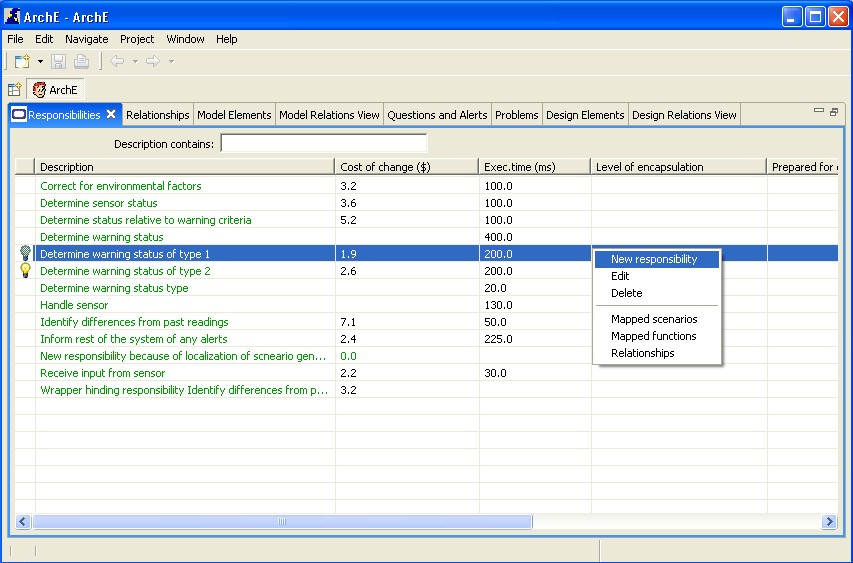
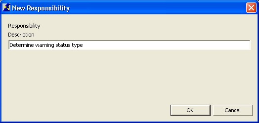
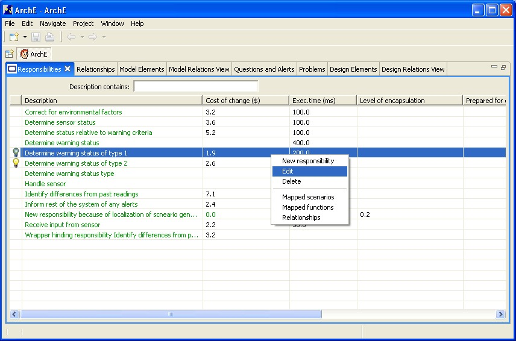
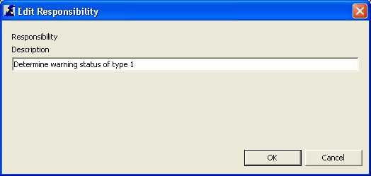
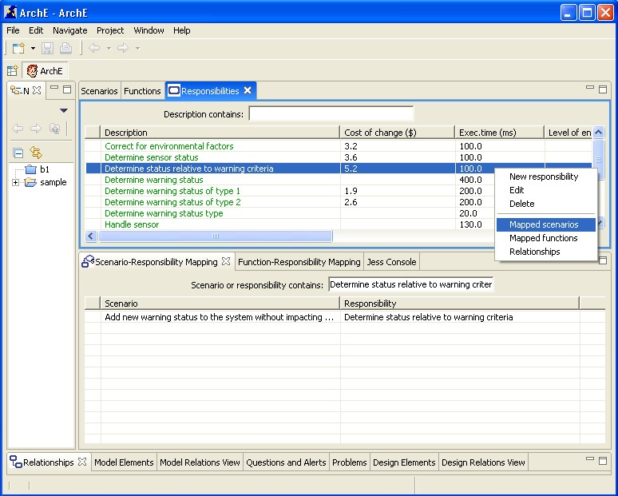
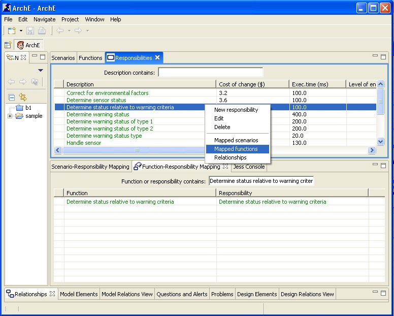
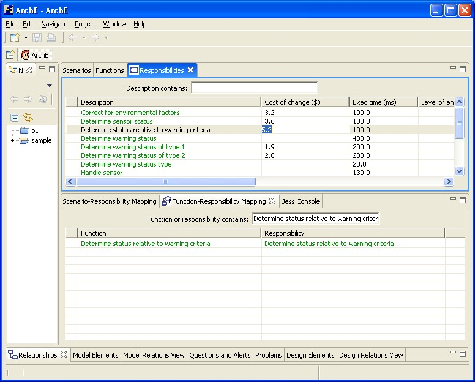

This tutorial will help you to understand the responsibilities view and the related functionalities.
Right click in the view and select New from the context menu options.

A dialog box for adding a new responsibility should open up. The user can then specify the responsibility description. Cancel closes this dialog box.
After specifying description of the responsibility, clicking OK sends the responsibility to the Core and the updated fact base (with the new responsibility) is reflected in the view (in the previously selected ordering).

Select a responsibility in the view. Right click and select Edit from the context menu options.
A dialog box for editing a responsibility should open up. The user can then specify the responsibility description. Cancel closes this dialog box.
After specifying description of the responsibility, clicking OK sends the updated responsibility to the Core and the updated fact base (with the new responsibility) is reflected in the view (in the previously selected ordering).


Select a responsibility in the view. Right click and select Delete from the context menu options.
Select a responsibility in the view. Right click and select Mapped scenarios from the context menu options.
The Scenario-Responsibility Mapping View should open up with the selected responsibility's description in the dynamic filter text box. The view will display the scenario-responsibility mappings that exist between scenarios and responsibilities (both) that contain the text of the selected responsibility.

Select a responsibility in the view. Right click and select Mapped functions from the context menu options.
The Function-Responsibility Mapping View should open up with the selected responsibility's description in the dynamic filter text box. The view will display the function-responsibility mappings that exist between functions and responsibilities (both) that contain the text of the selected responsibility.

Left click on the cell (containing the parameter value) that you want to edit. Make the changes and press Enter for the change(s) to be committed to the Core. The edited value must be of the correct datatype (the datatype that is expected by the Core for that parameter value).

Left click on the cell (containing the parameter value) that you want to delete. Press Backspace and then press Enter for the change(s) to be committed to the Core. If the correct datatype (the datatype that is expected by the Core for that parameter value) is a string then the value of the parameter is set to a blank string (""). If the datatype expected is a double or a boolean then the value is set to the default value (as expected by the Core). In most cases where the datatype is double, this default value is 0.0 and in cases where the datatype is boolean, the default value is false.
This tutorial briefly introduced you to all functionalities related to the ArchE Responsibilities View.